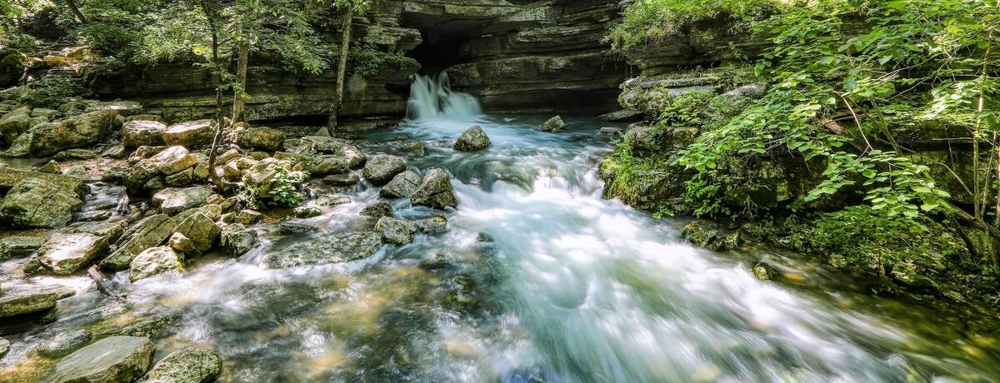

What to use springs for and how to prep for its use

springs are a great source of clean water, heres how to prep.
- make sure the spring you found is on apps or known by the public
- container of some form to collect the water (glass is prefered)
- use designated areas for collection if they are provided